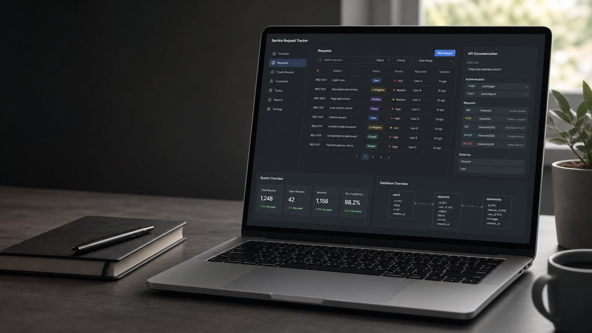

API-first thinking
Designing REST endpoints, request flows, validation paths, Swagger documentation, and health checks.
Kamjoor is Sexy
Entry-level backend developer building practical APIs, database-backed apps, and full-stack workflows.
Computer Science and Statistics graduate focused on ASP.NET Core Web API, SQL Server, Entity Framework Core, React, TypeScript, Docker, Git, and clear technical documentation.

Positioning
Designing REST endpoints, request flows, validation paths, Swagger documentation, and health checks.
Working with SQL Server, Entity Framework Core, relational models, and practical application state.
Using Git, Docker, debugging tools, setup notes, test commands, and troubleshooting documentation.
Featured project
A full-stack ticket-management application built to demonstrate real backend development practices: authentication-aware routes, relational data, REST APIs, ticket lifecycle workflows, comments, filtering, and operational documentation.
Tracks service tickets from creation through assignment, status changes, comments, search, and resolution.
Project case study
The Service Request Tracker is designed around the kind of workflow a support, facilities, or operations team would use every day: intake a request, assign responsibility, communicate progress, and close it cleanly.
Teams need a reliable way to track requests without losing context across emails, verbal updates, or disconnected notes.
I modeled the main ticket workflow through REST API endpoints, relational data, status changes, comments, assignment, validation, and API documentation.
I built protected React views with reusable TypeScript components, practical forms, ticket lists, detail views, and search/filter interactions.
I documented setup steps, API usage, test commands, troubleshooting notes, and project structure so the application is easier to run and review.
System shape
The project separates the user interface from backend logic, keeps database access behind Entity Framework Core models, and exposes documented API routes for the main ticket workflows.
Technical skills
ASP.NET Core Web API, C#, SQL Server, Entity Framework Core, REST API design, Swagger.
HTML, CSS, JavaScript, TypeScript, React, responsive layouts, form validation.
Git, GitHub, Docker, VS Code, Chrome DevTools, debugging, documentation, setup guides.
Basic WordPress familiarity, page updates, content edits, themes, plugins, and site maintenance.
Currently improving
Unit tests, integration tests, API workflow tests, and clearer test documentation.
Role-based access, protected API endpoints, user sessions, and secure application flows.
Cloud hosting, environment configuration, CI/CD basics, and production-ready setup notes.
Experience & education
B.Sc. with focus in Computer Science and Statistics, Winnipeg, Canada.
Organized tasks, communicated priorities, supported team operations, and helped complete daily goals on time.
Handled order inquiries, returns, inventory systems, customer requests, and fast-paced troubleshooting.
Contact
I can bring a strong learning curve, reliable work habits, and a project portfolio centered on practical backend systems.